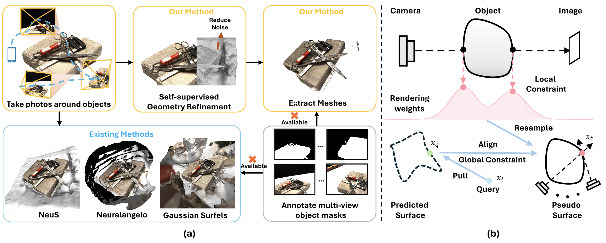

Comparison
Neuralangelo
Gaussian Surfels
Method
(a) Comparison on surface reconstruction without masks
We aim to reduce the noise in surface reconstruction without relying on multi-view object masks. Compared to existing methods, Hi-NeuS produces compact and more precise mesh results, enhancing its utility for downstream applications in virtual reality.
(b) Self-supervised geometry refinement
The rendering weights from multiple views are accumulated, corresponding to resampled target surface points xt (red). Based on this supervision, we advance query points xi (blue) to obtain the predicted surface points xq (green). We then align them using Chamfer Distance (CD) with global geometric constraints related to SDF.
Animation
Training Process
We visualize the global geometric refinement process here. Use the slider to see the difference between Neuralangelo and Hi-NeuS based on the backbone. Note that the difference is more obvious at the begining part of the training process.
Ground Truth
Loading...
NeuS Hi-NeuS(NeuS)

Ground Truth
Loading...
Neuralangelo Hi-NeuS(Neuralangelo)
Video
Related Links
Note that our expeiements are based on the following works:
Both NeuS and its variant Neuralangelo shares the same SDF-based volume rendering, allowing for easy integration of our self-supervised geometry refinement method into these backbones, as shown in (b) of our method above, to enhance surface reconstruction. Note that apart from our Hi-NeuS hyperparameters, we employ the NeuS and Neuralangelo configurations available for all scenes without per-scene fine-tuning.
Moreover, we also compare Hi-NeuS with the Gaussian Surfels, excluding the use of multi-view object masks.
BibTeX
@misc{bai2024highfidelitymaskfreeneuralsurface,
title={High-Fidelity Mask-free Neural Surface Reconstruction for Virtual Reality},
author={Haotian Bai and Yize Chen and Lin Wang},
year={2024},
eprint={2409.13158},
archivePrefix={arXiv},
primaryClass={cs.CV},
url={https://arxiv.org/abs/2409.13158},
}